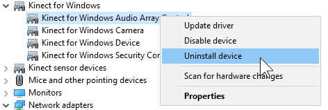
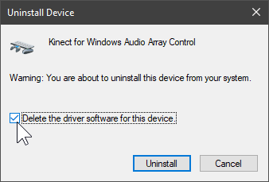

Text in bold often has more info attached when you move your mouse over it! Join us on Discordif you have any questions!
How to fix E_NUI_NOTREADY
This error usually happens because of a bugged driver install, purging the drivers entirely and then reinstalling them should do the trick.
With your Kinect connected, open Device Manager.
Right-click each device in the Kinect for Windows category then click Uninstall device.
You want to ✓ Check the box that says Delete the driver software for this device.
Remove "Kinect for Windows Device" LAST! Or else everything will break.


Unplug the Kinect from the PC.
Open Windows Settings and go to apps.
Search "Kinect" in the right search box then uninstall everything besides KinectToVR.
Restart your PC.
Open Windows Update and ensure that your computer is fully up-to-date.
Go to Windows Security (Windows Defender) then Click on Device Security > Core Isolation and ensure that Memory Integrity is disabled.
You can re-enable it after successfully re-installing the Kinect drivers.
Download and install the Kinect for Windows SDK v1.8
Only after the installation has completed you can reconnect the Kinect to your PC.
You should see four devices show up in the Kinect for Windows category in Device Manager as shown earlier.
If you see all 4, you're good to go. If you don't follow with the extra steps below
Some devices are still missing
Expand the Other Devices category in Device Manager
You should see devices with names such as Audios, Xbox NUI Camera, Kinect for Windows Security Control, e.t.c.
Right-click each of those and click Uninstall device
LEAVE THE BOX UNCHECKED then click Uninstall.
Once all Kinect-related devices have been removed from "Other Devices", unplug and replug the Kinect from your PC.
All 4 devices should now appear in Kinect for Windows.